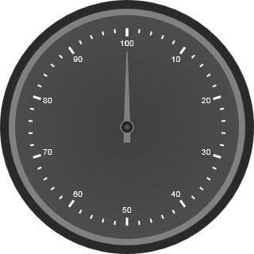

1. Create a new ASP.NET Web application. For details, see Creating ASP.NET Web Application
2. Drag and drop the Circular Gauge Control onto the .aspx page in the new web application.
|
[ASPX]
< syncfusion : CircularGauge AutoFormat ="Sandune" FrameOuterWidth ="15" FrameInnerWidth="8"ID="CircularGauge1"runat="server"> <Scales> <syncfusion:CircularScaleScaleDirection="Clockwise"ScaleRadius="125"> <Labels> <syncfusion:CircularGaugeLabelLabelPlacement="Near"/> </Labels> <Pointers> <syncfusion:CircularPointerBackNeedleLength="15"PointerPlacement="Near"/> </Pointers> <Ticks> <syncfusion:CircularGaugeTickTickPlacement="Near"TickHeight="10"TickWidth="3"/> <syncfusion:CircularGaugeTickTickStyle="MinorInterval"TickHeight="5"TickWidth="2" TickPlacement="Near"/> </Ticks> </syncfusion:CircularScale> </Scales> </syncfusion:CircularGauge>
|
3. Build and run the application. The result will be displayed as follows:
